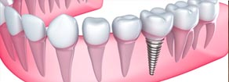

Unlike the old days when implants spelled pain and stress for the patient, the treatment today is matter of just a day or two. You are ready to get back to your normal life but with greater confidence without missing any opportunity to show off those new teeth!
Dental surgeries in India now provide treatment wherein a tooth crown is placed directly after an implant or within a few days, similar to general crown and bridge restorations.
A new technology NobelDirect is patient-friendly, maintaining tissue safety. The implant is built-up with a single piece of titanium, integrating the implant body as well as the fixed abutment.
The above surgical procedure is completed in a single along with putting the provisional crown in place, leaving negligible scope of patient discomfort.
The traditional modus operandi were time-consuming and painful. But with advent of NobelDirect, the one piece design ensures flapless and minimal surgical incursion. Usually, the implants are inserted and used instantly. Depending on the refined treatment protocol and the implant surface, TiUnite. This instantaneous functionality proves trouble-free for both the patient and the doctor. The implants look very much alike the natural teeth.
This ready-to-go practice with NobelBiocare implants is clinically tested and certified and have proven success rates similar to conventional implants techniques. Results also suggest that the immediate function is possible in all oral parts. At the end of the treatment, the patient is a proud owner of beautiful teeth sans any post-surgery trauma.
The advantages of this contemporary technique are:
- Minimal discomfort: There is negligible distress ensuring flapless procedure.
- Less waiting: The single-stage surgical practice brings chairtime to the minimum.
- Instant results: The dental restoration can be done immediately providing immediate enjoyment.
- Stable & esthetic soft tissues: Marginal gingival tissues and the interproximal papillae remain stable for two reasons. First, the implant/crown margins can be prepared to accommodate the correct facial, lingual and interproximal anatomy. Second, the TiUnite surface beneath that preparation allows a shallow sulcus and a normal junctional epithelium that is attached to the TiUnite surface.
- Reduced Bone Loss: The osseoconductive implant surface and the immediate function protocal lessens potential bone loss at the alveolar crest.